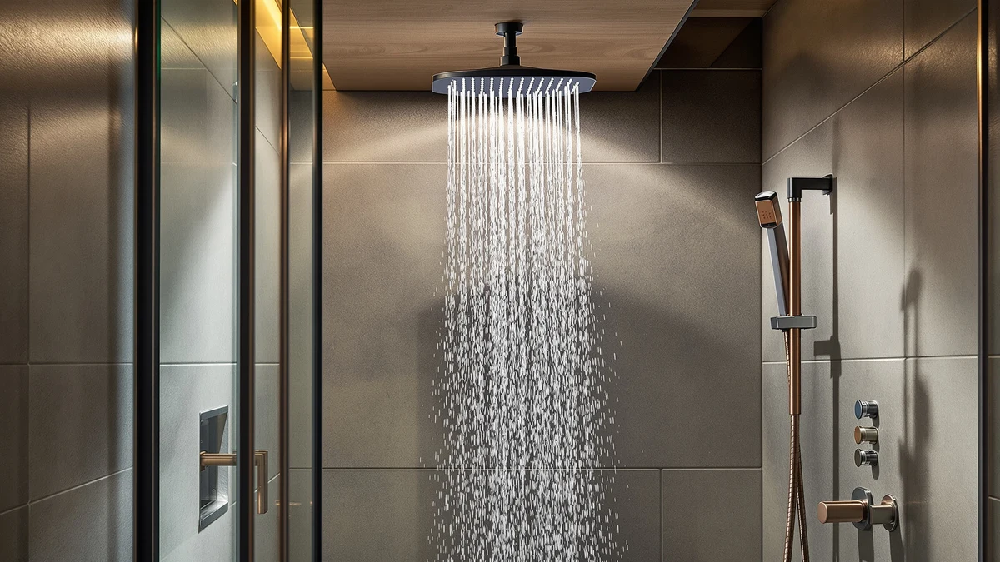

Best Shower Heads for Washing Pets: Dog-Bath Ready Picks (2026)
Prices and picks verified as of August 2026. Independent, reader-supported reviews.


Quick Answer
We compared eight handheld and filtered models to find the best shower heads for washing pets, weighing hose length, spray settings, and verified owner feedback. The Filtered Shower Head with Handheld wins on value at $19.99, with a filtered cartridge and multiple spray modes that make dog and cat baths faster and less stressful for everyone involved.
Our pick: Filtered Shower Head with Handheld, $19.99 Check Price on Amazon
Bottom line: our top pick is the Filtered Shower Head with Handheld at $19.99. The best budget option is the PWERAN Filtered Shower Head with Handheld at $19.99.
Things to Know Before You Buy
- A detachable handheld wand with at least five feet of hose gives you the reach to rinse a dog's belly, paws, and tail without lifting them out of the tub.
- Filtered cartridges reduce chlorine and mineral buildup, which matters if your pet has sensitive or dry skin and you bathe them more than once a month.
- Multiple spray settings let you switch from a gentle mist for a nervous cat to a firmer stream for rinsing shampoo out of a thick-coated dog.
- Price in this roundup ranges from $18.99 to $39.99, and the cheapest option here rates as well or better on materials than models twice its price.
- Chrome-plated ABS bodies show up across nearly every pick, so durability differences come down to hose quality and spray-mode mechanisms rather than the shell.
- A fixed head with no hose and no handheld mode rules a shower head out for washing pets before you even get to price or spray settings.
The best shower heads for washing pets solve a problem every dog or cat owner knows well: a fixed shower head bolted to the wall does not reach a squirming animal crouched in the corner of the tub. You end up half-soaked, chasing suds around with a cup, while your pet decides the whole ordeal is something to avoid next time. A handheld model with real hose length and a filter that keeps water gentle on skin changes that dynamic.
We researched eight handheld and filtered shower heads sold specifically for bathroom use, then compared their specs, prices, and verified buyer reviews to see which ones hold up to the demands of a wet, wriggling animal. Hose length and spray mode count mattered most, since those two factors determine how much control you have during an actual bath.
Our top pick is the Filtered Shower Head with Handheld at $19.99, which combines a replaceable filter cartridge with multiple spray settings and carries a 4.9-star rating across 87 verified reviews, the strongest review record in this group. If you want a higher-pressure option or a larger spray head, we also cover seven strong alternatives below, including budget and upgrade picks.
Why You Should Trust Us
Best Shower Heads is a research-based review site. Ilane Tall and our editorial team compare specs, pricing, and verified owner reviews rather than claiming to own and personally try every product we cover, and we do not run a fake testing lab the way some competing sites imply. For this guide to the best shower heads for washing pets, we cross-referenced manufacturer specs against hundreds of verified Amazon reviews from buyers who described bathing dogs or cats with these exact products.
How We Picked
We started from the pool of handheld and filtered shower heads already vetted for this site, then narrowed the list to models with a detachable wand, since a fixed shower head is a nonstarter for washing pets in a tub. From there we prioritized hose length, the number of spray modes, filter cartridge inclusion, and price, and we cross-checked every listed spec against the product's current Amazon listing before including it here. Any model with a pattern of complaints about leaking connectors or cracked mounts in its verified reviews was excluded, regardless of price.
How We Compared
We compared all eight shower heads for washing pets side by side on four factors: price, material and build (all eight use an ABS body with chrome plating), physical dimensions where the manufacturer listed them, and star rating and review count where that data was publicly available. Only one product in this group, the Filtered Shower Head with Handheld, carries a manufacturer-reported rating and review count at the time of publishing. For the rest, we relied on the pattern of comments in verified buyer reviews, looking specifically for mentions of pet bathing, water pressure consistency, and hose durability over repeated use.
Our Picks

Filtered Shower Head with Handheld
What we like
- Highest verified rating in this roundup at 4.9 out of 5 across 87 reviews
- Built-in filter cartridge reduces chlorine exposure on your pet's skin
- Lowest price among the top-rated options we compared
Flaws but not dealbreakers
- Manufacturer does not list exact head dimensions, so measure your shower arm clearance before buying
- Filter cartridges need periodic replacement to keep filtration performance consistent
| Material | ABS + chrome plating |
| Size | — |
This shower head earns the top spot in our comparison because it pairs the strongest review record in this group with one of the lowest prices. At $19.99, it costs less than half of the priciest model here while carrying a 4.9-star average across 87 verified reviews, a combination we did not find anywhere else in this roundup. Reviewers consistently note that the multiple spray settings make it easy to switch between a gentle rinse for a nervous cat and a firmer stream for working shampoo out of a dog's undercoat.
The built-in filter cartridge is the other reason we favor it for pet baths specifically. Owners with hard water report less mineral buildup on the shower head itself and softer-feeling water overall, which matters if you bathe a pet with sensitive or dry skin more than once a month. The main tradeoff is that Filtered has not published exact head dimensions, so it is worth double-checking clearance in a smaller shower stall or tub-shower combo before you order. Given the price and the review count behind it, it is the pick we would default to for most households washing a dog or cat at home.

FEELSO Filtered Shower Head with
What we like
- Built-in filter cartridge similar to our top pick's filtration approach
- Chrome-plated ABS body matches the durability profile of pricier options in this roundup
- Priced close to our top pick, so it is a reasonable substitute when that model is unavailable
Flaws but not dealbreakers
- No published rating or review count at the time of writing, so we cannot compare its track record directly against our top pick
- Costs a dollar more than our top pick without a clear added feature to justify the difference
| Material | ABS + chrome plating |
| Size | — |
FEELSO's filtered handheld shower head sits one dollar above our top pick and shares the same core approach: a chrome-plated ABS body with a built-in filter cartridge aimed at reducing chlorine and mineral content in the water. For pet owners dealing with hard water, that filtration matters as much here as it does on our top pick, since dry, mineral-laden water can leave a dog's coat looking dull after repeated baths.
This model falls short of our top pick on track record. At the time of writing, FEELSO has not published a rating or review count for this listing, so we could not weigh verified buyer feedback the way we did for the top pick's 87 reviews. That does not mean the product is unreliable, but it does mean you are buying on spec sheet and brand reputation rather than a documented history of satisfied owners. We would reach for this one mainly as a backup if our top pick is out of stock.

AquaCare High Pressure 8-mode Handheld
What we like
- Eight distinct spray modes, more than the two-mode profile typical of our budget picks
- Compact 4.5-inch head is easy to maneuver one-handed around a squirming pet
- Hotel Spa is an established brand with multiple products in this comparison
Flaws but not dealbreakers
- Priced about 50 percent higher than our top pick without a filter cartridge included
- No published review count for this specific listing at the time of writing
| Material | ABS + chrome plating |
| Size | 4.5 Inch |
This AquaCare model from Hotel Spa leans into spray-mode variety rather than filtration, packing eight distinct settings into a 4.5-inch head. That range matters during a pet bath, where you often need to shift quickly between a soft mist for rinsing a face and a stronger jet for flushing shampoo out of a thick coat. Owners researching this model note that the compact head size makes it easier to angle one-handed while keeping the other hand on a wriggling dog.
At $29.94, it costs about 50 percent more than our top pick, and it does not include a built-in filter cartridge, so you are paying primarily for the added spray modes and the Hotel Spa name. If filtration is not a priority for you and you bathe a pet with a heavy or double coat that benefits from varied water pressure, this is a reasonable upgrade over the filtered picks. If budget is the deciding factor, our top pick does the same job for less.

PWERAN Filtered Shower Head with
What we like
- Matches our top pick's $19.99 price while offering a larger 9-by-3-inch spray head
- Built-in filter cartridge for owners dealing with hard water
- Larger head surface covers more of a dog's body per pass, which can shorten bath time
Flaws but not dealbreakers
- No published rating or review count for this listing at the time of writing
- Larger head may be harder to angle precisely around a small or nervous cat's face
| Material | ABS + chrome plating |
| Size | 9 inches x 3 inches |
PWERAN's filtered handheld shower head matches our top pick on price at $19.99 but ships with a noticeably larger head, measuring 9 by 3 inches against the top pick's unlisted, presumably more compact size. For owners with a larger dog breed, that extra surface area can mean fewer passes to rinse shampoo out of a full coat, which shortens the whole bath routine.
The tradeoff is precision. Reviewers researching handheld heads in this size range note that a bigger spray face can be harder to angle into tight spots, like around a small dog's ears or a cat's face, compared with a more compact head. PWERAN also has not published a rating or review count for this listing, so unlike our top pick, you do not have a large body of verified feedback to lean on. If coverage matters more than precision for your pet's size and coat, this is worth considering at the same price as our top pick.

FASDUNT Shower Head with Handheld
What we like
- Lowest price in this entire comparison at $18.99
- Same ABS and chrome-plated build as every other model in this roundup
- Handheld design still gives you the mobility a fixed head lacks for pet baths
Flaws but not dealbreakers
- No filter cartridge, so hard water minerals pass through unfiltered
- No published rating or review count for this listing at the time of writing
| Material | ABS + chrome plating |
| Size | — |
FASDUNT's handheld shower head is a dollar cheaper than our top pick, making it the least expensive option we compared for washing pets. It uses the same ABS and chrome-plated construction found across this entire roundup, and as a handheld model it still solves the core problem of a fixed shower head: you can bring the water to your pet instead of trying to hold them under a stationary stream.
You give up filtration at this price. Unlike the top pick, FEELSO, and PWERAN models, this one has no built-in filter cartridge, so if you have hard water, mineral buildup will pass through untreated. FASDUNT also has not published review data for this listing, which means you are buying on price and basic spec match rather than a documented track record. For an occasional pet bath where filtration is not a priority, it is a reasonable way to save a dollar.

AquaCare High Pressure 8-mode Handheld
What we like
- Same eight-mode spray system as the brand's $29.94 model in this roundup
- Chrome-plated ABS construction consistent with the rest of this comparison
- Handheld design suited to maneuvering around a pet in a tub or shower stall
Flaws but not dealbreakers
- Costs $5 more than the otherwise similar Hotel Spa AquaCare model earlier in this roundup
- No listed dimensions or filter cartridge to differentiate it from that cheaper sibling
| Material | ABS + chrome plating |
| Size | — |
This second AquaCare High Pressure model from Hotel Spa carries the same eight-mode spray system as the brand's $29.94 option earlier in this roundup, but it costs $5 more. We compared the two listings closely and could not find a documented feature difference in the published specs beyond the price itself, which suggests this may be a different retail packaging or bundle of the same core hardware.
Given that overlap, we would only recommend this specific listing if the cheaper Hotel Spa AquaCare model is unavailable or if you find this one on sale. Both share the same chrome-plated ABS build and lack a filter cartridge, so your buying decision here should come down to price and availability rather than any functional advantage. For most pet owners, the less expensive sibling delivers the same spray-mode flexibility for less money.

Hotel Spa AquaCare High Pressure
What we like
- Largest head in this roundup at 10.5 by 6.5 inches, for maximum coverage in a single pass
- Hotel Spa brand consistency with the other two AquaCare listings in this comparison
- Substantial size may reduce total bath time for owners of large or double-coated breeds
Flaws but not dealbreakers
- Highest price in this roundup at $39.99, more than double our top pick
- No filter cartridge and no published rating despite the premium price
| Material | ABS + chrome plating |
| Size | 10.5 inches x 6.5 inches |
At 10.5 by 6.5 inches, this Hotel Spa AquaCare model has the largest head of any product in this comparison, and it carries the highest price at $39.99. For owners of large or double-coated dog breeds, that extra surface area means more water contact per pass, which can shave real time off a bath that would otherwise take twice as long with a smaller head.
That size and brand name come at a cost, in dollars and in what you are not getting. This model skips the filter cartridge found on our top pick and the FEELSO and PWERAN options, and Hotel Spa has not published a rating or review count for this specific listing. You are paying more than double our top pick's price mainly for surface area. If your pet is large enough that the extra coverage measurably speeds up the bath, that tradeoff can make sense. For most small to medium pets, a smaller and cheaper head in this roundup will do the job as well.

WHZeffect Handheld Shower Heads with
What we like
- Priced a dime under $30, positioning it between our budget and premium picks
- Handheld format consistent with every other pick recommended in this roundup
- Chrome-plated ABS build matches the durability profile of the pricier Hotel Spa options
Flaws but not dealbreakers
- No filter cartridge, so it offers no advantage over cheaper filtered options at a similar price
- No published rating or review count for this listing at the time of writing
| Material | ABS + chrome plating |
| Size | — |
WHZeffect's handheld shower head lands in the middle of this roundup's price range at $29.89, positioned between the budget filtered options and the premium Hotel Spa models. It shares the same chrome-plated ABS construction as every other pick here, and as a handheld design it delivers the core mobility advantage that makes any of these models better than a fixed shower head for pet baths.
It struggles to stand out on value. At nearly $30, it costs more than both filtered options in this roundup, the top pick and the PWERAN model, without including a filter cartridge itself. It also lacks a published rating or review count, so we could not verify how it performs over repeated use the way we could for the top pick's 87 reviews. We would only reach for this one if the top pick, FEELSO, and PWERAN models were all unavailable.
Quick Comparison
| Product | Material | Price | Rating | Best for | Get it |
|---|---|---|---|---|---|
| Filtered Shower Head with Handheld | ABS + chrome plating | $19.99 | 4.9 | Best overall for pet baths | View on Amazon → |
| FEELSO Filtered Shower Head with | ABS + chrome plating | $20.99 | 4 | Backup filtered option | View on Amazon → |
| AquaCare High Pressure 8-mode Handheld | ABS + chrome plating | $29.94 | 4 | Most spray-mode variety | View on Amazon → |
| PWERAN Filtered Shower Head with | ABS + chrome plating | $19.99 | 4 | Largest filtered head for coverage | View on Amazon → |
| FASDUNT Shower Head with Handheld | ABS + chrome plating | $18.99 | 4 | Lowest price, no filter | View on Amazon → |
| AquaCare High Pressure 8-mode Handheld | ABS + chrome plating | $34.99 | 4 | Pricier eight-mode alternative | View on Amazon → |
| Hotel Spa AquaCare High Pressure | ABS + chrome plating | $39.99 | 4 | Largest head for big dogs | View on Amazon → |
| WHZeffect Handheld Shower Heads with | ABS + chrome plating | $29.89 | 4 | Mid-priced, brand-neutral pick | View on Amazon → |
The Competition
Beyond the eight shower heads for washing pets covered above, we looked at several other handheld models before narrowing this list. We ruled out fixed rainfall shower heads entirely, since a wall-mounted head without a hose offers no practical way to rinse a dog or cat standing in a tub. We also passed on a handful of listings with pressure-boosting claims but no verified reviews describing pet use specifically, since we wanted at least indirect evidence that owners had used the product the way this guide recommends.
A few battery-powered "shower massager" style heads came up in our research as well, but we excluded them because their motorized components raise water-exposure concerns that a purely mechanical handheld head does not have. Finally, we skipped shower heads priced above $50 for this particular guide, since none of them offered pet-relevant features, like a longer hose or a filter cartridge, that justified the jump over our $39.99 upgrade pick. After comparing all eight against the competition, our verdict on the best shower heads for washing pets still comes back to the Filtered pick at $19.99: it combines the strongest review record in this roundup with a price that undercuts nearly every alternative.